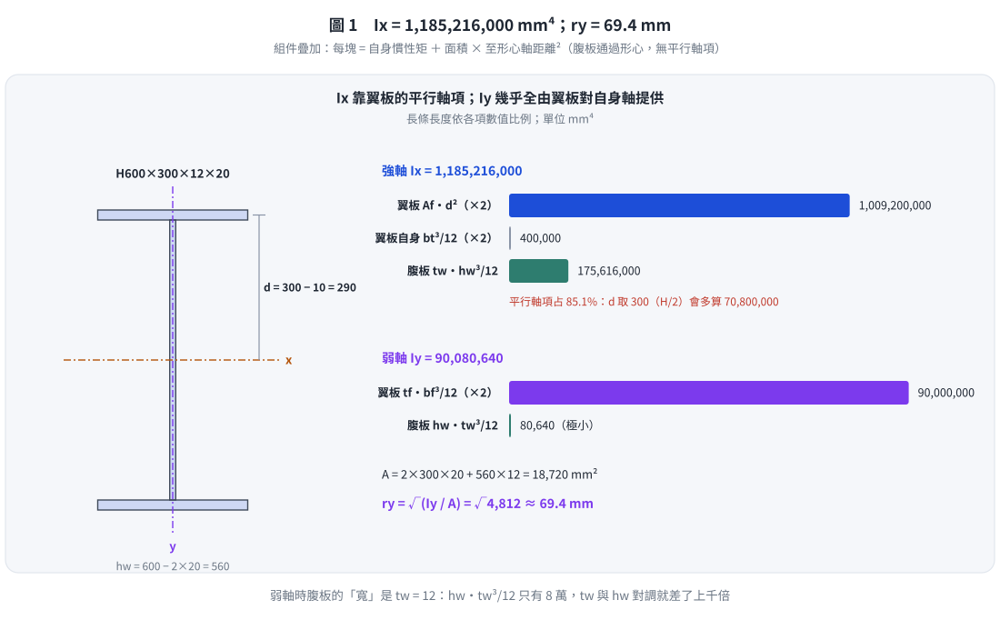
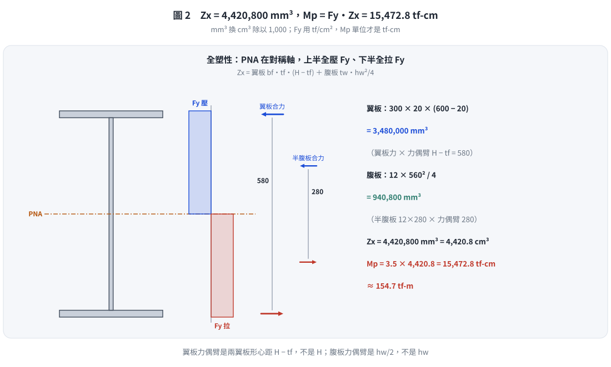

📄 題目正本：考卷原文・附圖・判讀清單（已確認）
SS-2006-3 題目正本
本檔只記錄考卷上寫了什麼、圖上畫了什麼，不含任何解法。解析見同資料夾
SS-2006-3.md。
判讀清單經使用者確認前，狀態為「待確認」；確認後本檔原則上不再修改（改動須回考卷原圖並記 log）。
| 項目 | 內容 |
|---|---|
| 考卷 | raw/exams/SS-2006_鋼結構設計.pdf 第 1 頁，第三題 |
| 考年 | 民國 95 年（2006） |
| 配分 | 20 分（每小題 5 分） |
| 附圖 | 無 |
| 判讀狀態 | 已確認（2026-11-02 使用者確認，含「不確定」項之解讀；轉錄同日，PyMuPDF 110 dpi 全頁＋關鍵尺寸 220–400 dpi 局部目視，盲讀後才比對既有解析） |
1. 考卷原文（逐字）
三、有一 H 型鋼梁，斷面標示為 H 600 × 300 × 12 × 20（mm），試求出：（每小題 5 分，共 20 分）
㈠斷面強軸之慣性矩 $I_x$ = ? mm⁴
㈡斷面弱軸之迴轉半徑 $r_y$ = ? mm
㈢斷面強軸之塑性斷面模數 $Z_x$ = ? mm³
㈣斷面強軸之塑性彎矩強度 $M_p$ = ? tf-cm（若鋼材降伏應力 $F_y = 3.5\ \text{tf/cm}^2$）
2. 考卷給的公式、附表與參數
無（本卷無參考公式區）。
3. 附圖
本題無附圖。
4. 判讀清單
「把握」標不確定者請優先確認；解讀類項目（題目用字的意思）另標「解讀」。
| # | 項目 | 判讀 | 圖上／題文依據 | 把握 |
|---|---|---|---|---|
| 1 | 斷面標示順序 | $d \times b_f \times t_w \times t_f$ = 600 × 300 × 12 × 20 mm | 國內 H 型鋼標示慣例（題目未另說明） | 確定 |
| 2 | 圓角 | 題目未給圓角半徑，以三塊矩形計 | 題文無圓角資料（解讀） | 確定 |
| 3 | 答案單位 | ㈠ mm⁴、㈡ mm、㈢ mm³、㈣ tf-cm，各小題單位不同 | 題文 | 確定 |
轉錄：2026-11-02（U2-1 題目／解答拆分試做）｜確認：2026-11-02 使用者確認
考題編號：SS-2006-3
主分類： SS-U1-2 梁桿件
副分類： SS-U2-1 塑性分析與設計
設計法： LRFD
標籤： 斷面性質 慣性矩 迴轉半徑 塑性斷面模數 平行軸定理 H型鋼 塑性彎矩
1. 題目（考卷原文見題目正本）
考卷原文、公式／附表、附圖與判讀清單（已確認）見同資料夾
SS-2006-3-problem.md（題目瀏覽頁最上方「📄 題目正本」區塊）。本節只列解題時最容易讀錯的地方與本解使用的記號；題意以題目正本為準。
常見誤讀
| 項目 | 正確判讀 | 常見誤讀 |
|---|---|---|
| 斷面標示 | $d \times b_f \times t_w \times t_f$ = 600 × 300 × 12 × 20 mm | 把 12、20 對調（腹板厚與翼板厚） |
| 圓角 | 未給，以三塊矩形計 | 自行加圓角面積 |
| 答案單位 | ㈠ mm⁴、㈡ mm、㈢ mm³、㈣ tf-cm | 全部用 cm 系統作答 |
本解記號： $d = 600$、$b_f = 300$、$t_w = 12$、$t_f = 20$ mm，$h_w = d - 2t_f = 560$ mm；$F_y = 3.5$ tf/cm²。
2. 考題核心精神與出題者意圖 (Core Concepts & Examiner's Intent)
本題測驗 H 型鋼斷面性質的計算能力，是結構工程師基本功。出題意圖：
- 考察平行軸定理的正確應用（$I_x$ 計算）
- 考察強弱軸慣性矩的概念區分（$r_y$ vs $r_x$）
- 考察塑性斷面模數 $Z_x$ 的定義（與彈性模數 $S_x$ 的差異）
- 考察單位換算能力（mm³ → cm³，配合 $F_y$ 單位）
3. 斷面幾何確認
斷面標示 H 600 × 300 × 12 × 20 的讀法：
$$H\ [\text{全高}] \times [\text{翼板寬}] \times [\text{腹板厚}] \times [\text{翼板厚}]\ (\text{mm})$$
| 符號 | 意義 | 數值 |
|---|---|---|
| $H$ | 斷面全高 | 600 mm |
| $b_f$ | 翼板寬 | 300 mm |
| $t_w$ | 腹板厚 | 12 mm |
| $t_f$ | 翼板厚 | 20 mm |
| $h_w = H - 2t_f$ | 腹板清淨高 | $600 - 2 \times 20 = 560$ mm |
斷面面積：
$$A = 2 \times b_f t_f + h_w t_w = 2 \times (300 \times 20) + (560 \times 12) = 12{,}000 + 6{,}720 = 18{,}720\ \text{mm}^2$$
3.5 變數層次分析（Variable Hierarchy Analysis）
複習提示：解題後，在每個卡住的知識點「卡關?」欄標記
⚠；第二次複習時只看有⚠的項目。
最終目標： 由 H 600×300×12×20（mm）計算 $I_x$、$r_y$、$Z_x$、$M_p$
主要公式（$\boxed{\phantom{x}}$ = 未知，待推導）
$$\boxed{I_x} = 2\left[\frac{1}{12}b_f t_f^3 + b_f t_f d^2\right] + \frac{1}{12}t_w h_w^3$$
$$\boxed{I_y} = 2 \cdot \frac{1}{12}t_f b_f^3 + \frac{1}{12}h_w t_w^3$$
$$\boxed{r_y} = \sqrt{\frac{\boxed{I_y}}{A}}$$
$$\boxed{Z_x} = b_f t_f(H - t_f) + t_w \cdot \frac{h_w^2}{4}$$
$$\boxed{M_p} = F_y \cdot \boxed{Z_x}$$
L1：題目直接給定
| 符號 | 數值 | 說明 |
|---|---|---|
| $H$ | 600 mm | 斷面全高 |
| $b_f$ | 300 mm | 翼板寬 |
| $t_w$ | 12 mm | 腹板厚 |
| $t_f$ | 20 mm | 翼板厚 |
| $F_y$ | 3.5 tf/cm² | 降伏應力 |
L2：需知識點推導
Step 1：斷面幾何衍生量
| 符號 | 公式 / 來源 | 卡關? |
|---|---|---|
| $h_w$ | $H - 2t_f = 600 - 40 = 560$ mm（腹板淨高） | |
| $d$（翼板形心距強軸） | $H/2 - t_f/2 = 300 - 10 = 290$ mm | |
| $A$ | $2b_f t_f + h_w t_w = 12000 + 6720 = 18720$ mm² |
Step 2：強軸慣性矩 $I_x$（平行軸定理）
| 符號 | 公式 / 來源 | 卡關? |
|---|---|---|
| $I_{x,\ \text{flange}}$（各） | $\frac{1}{12}b_f t_f^3 + b_f t_f d^2 = 200000 + 504600000$ mm⁴ | |
| $I_{x,\ \text{web}}$ | $\frac{1}{12}t_w h_w^3 = 175616000$ mm⁴ | |
| $I_x$ | $2 \times 504800000 + 175616000 \approx 1.185 \times 10^9$ mm⁴ |
Step 3：弱軸迴轉半徑 $r_y$
| 符號 | 公式 / 來源 | 卡關? |
|---|---|---|
| $I_{y,\ \text{flange}}$（各） | $\frac{1}{12}t_f b_f^3 = 45000000$ mm⁴（注意 $b_f$ 在三次方） | |
| $I_y$ | $2 \times 45000000 + \text{腹板項（可忽略）} \approx 90 \times 10^6$ mm⁴ | |
| $r_y$ | $\sqrt{I_y/A} = \sqrt{90080640/18720} \approx 69.4$ mm |
Step 4：塑性斷面模數 $Z_x$ 與塑性彎矩 $M_p$
| 符號 | 公式 / 來源 | 卡關? |
|---|---|---|
| $Z_x$ | $b_f t_f(H-t_f) + t_w h_w^2/4 = 3480000 + 940800 = 4420800$ mm³ | |
| 單位換算 | $4420800$ mm³ $= 4420.8$ cm³（$1$ cm³ $= 10^3$ mm³） | |
| $M_p$ | $F_y \times Z_x = 3.5 \times 4420.8 = 15472.8$ tf·cm |
L3：深層知識（不懂就卡住）
| 知識點 | 說明 | 卡關? |
|---|---|---|
| 平行軸定理 $I = I_0 + Ad^2$ | 翼板形心距 $d = H/2 - t_f/2$，不是 $H/2$；算錯 $d$ 是最常見失誤 | |
| $I_y$ 翼板公式的三次方 | 弱軸方向翼板長邊是 $b_f$，故 $I_{y,f} = \frac{1}{12}t_f b_f^3$（$b_f$ 在三次方） | |
| $Z_x$ vs $S_x$ 定義差異 | $S_x = I_x/(H/2)$（彈性）；$Z_x = \sum A_i \bar{y}_i$（塑性）；形狀因子 $f = Z_x/S_x \approx 1.12$ | |
| 單位換算 mm³ → cm³ | $1$ cm $= 10$ mm，$1$ cm³ $= 10^3$ mm³（非 $10^6$），用 $F_y$ (tf/cm²) 時必須換算 |
4. 詳細計算過程
(一) 斷面強軸慣性矩 $I_x$
採組件疊加法 + 平行軸定理：
$$I_x = I_{x,\text{flanges}} + I_{x,\text{web}}$$
翼板（上下各一，對中性軸距離 $d$）：
$$d = \frac{H}{2} - \frac{t_f}{2} = 300 - 10 = 290\ \text{mm}$$
$$I_{x,\text{flange（各）}} = \frac{1}{12} b_f t_f^3 + b_f t_f \cdot d^2$$
$$= \frac{1}{12}(300)(20)^3 + (300)(20)(290)^2$$
$$= 200{,}000 + 504{,}600{,}000 = 504{,}800{,}000\ \text{mm}^4$$
$$I_{x,\text{flanges}} = 2 \times 504{,}800{,}000 = 1{,}009{,}600{,}000\ \text{mm}^4$$
腹板（通過中性軸）：
$$I_{x,\text{web}} = \frac{1}{12} t_w h_w^3 = \frac{1}{12}(12)(560)^3 = 175{,}616{,}000\ \text{mm}^4$$
合計：
$$\boxed{I_x = 1{,}009{,}600{,}000 + 175{,}616{,}000 = 1{,}185{,}216{,}000\ \text{mm}^4 \approx 1.185 \times 10^9\ \text{mm}^4}$$
(二) 斷面弱軸迴轉半徑 $r_y$
先求弱軸慣性矩 $I_y$：
$$I_{y,\text{flange（各）}} = \frac{1}{12} t_f b_f^3 = \frac{1}{12}(20)(300)^3 = 45{,}000{,}000\ \text{mm}^4$$
$$I_{y,\text{flanges}} = 2 \times 45{,}000{,}000 = 90{,}000{,}000\ \text{mm}^4$$
$$I_{y,\text{web}} = \frac{1}{12} h_w t_w^3 = \frac{1}{12}(560)(12)^3 = 80{,}640\ \text{mm}^4 \quad \text{（極小）}$$
$$I_y = 90{,}000{,}000 + 80{,}640 = 90{,}080{,}640\ \text{mm}^4$$
$$r_y = \sqrt{\frac{I_y}{A}} = \sqrt{\frac{90{,}080{,}640}{18{,}720}} = \sqrt{4{,}812} \approx \boxed{69.4\ \text{mm}}$$

圖 1 $I_x = 1{,}185{,}216{,}000$ mm⁴，平行軸項占 85.1%；$I_y$ 幾乎全由翼板提供，$r_y = 69.4$ mm。這張圖攔的是翼板距離取 $H/2 = 300$（多算 70,800,000）、漏了平行軸項，或弱軸腹板把 $h_w$、$t_w$ 對調。
(三) 斷面強軸塑性斷面模數 $Z_x$
$$Z_x = b_f t_f (H - t_f) + t_w \cdot \frac{h_w^2}{4}$$
$$= (300)(20)(600 - 20) + (12)\frac{(560)^2}{4}$$
$$= 3{,}480{,}000 + 940{,}800$$
$$\boxed{Z_x = 4{,}420{,}800\ \text{mm}^3 \approx 4.421 \times 10^6\ \text{mm}^3}$$
(四) 斷面強軸塑性彎矩強度 $M_p$
$$Z_x = 4{,}420{,}800\ \text{mm}^3 = 4{,}420.8\ \text{cm}^3$$
$$M_p = 3.5\ \frac{\text{tf}}{\text{cm}^2} \times 4{,}420.8\ \text{cm}^3$$
$$\boxed{M_p = 15{,}472.8\ \text{tf-cm} \approx 154.7\ \text{tf-m}}$$

圖 2 $Z_x$ = 翼板 3,480,000 ＋ 腹板 940,800 = 4,420,800 mm³；$M_p = 3.5 \times 4{,}420.8 = 15{,}472.8$ tf-cm。這張圖攔的是翼板力偶臂用 $H$、腹板力偶臂用 $h_w$，或 mm³ 換 cm³ 沒除以 1,000。
5. 答案彙整
| 小題 | 計算項目 | 答案 |
|---|---|---|
| (一) | 強軸慣性矩 $I_x$ | $\mathbf{1{,}185{,}216{,}000\ \text{mm}^4}$ $(\approx 1.185 \times 10^9\ \text{mm}^4)$ |
| (二) | 弱軸迴轉半徑 $r_y$ | $\mathbf{69.4\ \text{mm}}$ |
| (三) | 強軸塑性斷面模數 $Z_x$ | $\mathbf{4{,}420{,}800\ \text{mm}^3}$ $(\approx 4.421 \times 10^6\ \text{mm}^3)$ |
| (四) | 強軸塑性彎矩強度 $M_p$ | $\mathbf{15{,}472.8\ \text{tf-cm}}$ |
6. 涉及陷阱
- $h_w$ 的定義：腹板清淨高 $h_w = H - 2t_f = 560\ \text{mm}$，不是全高 600 mm。平行軸定理中翼板形心距 $d = H/2 - t_f/2 = 290\ \text{mm}$，也非 300 mm。
- $Z_x$ 公式的推導：考試常需從定義推導，公式 $Z_x = b_f t_f (H-t_f) + t_w h_w^2/4$ 要會導出。
- 單位換算：$F_y$ 給 tf/cm²，$Z_x$ 算出 mm³，必須換成 cm³ 再相乘。$1\ \text{cm}^3 = 10^3\ \text{mm}^3$（不是 $10^6$）。
- $I_y$ 計算時翼板公式：弱軸方向，翼板的長邊是 $b_f$（翼板寬），故 $I_{y,\text{flange}} = \frac{1}{12} t_f b_f^3$（注意 $b_f$ 在三次方處），不要與 $I_x$ 的公式混淆。
7. 進階探討
形狀因子的工程意義：
$$f = \frac{Z_x}{S_x} = \frac{M_p}{M_y} = 1.119$$
H 型鋼的形狀因子約 1.10~1.15，表示斷面從初始降伏（$M_y$）到完全塑化（$M_p$）尚有約 10~15% 的強度儲備。相比矩形斷面（$f=1.5$），H 型鋼的塑性強度儲備較小，但材料利用率高（大部分材料在翼板，距中性軸遠，$S_x$ 本來就接近 $Z_x$）。
$I_x$ 分配比例：
$$\frac{I_{x,\text{flanges}}}{I_x} = \frac{1{,}009{,}600{,}000}{1{,}185{,}216{,}000} = 85.2\%$$
超過 85% 的強軸慣性矩由翼板貢獻（主要是平行軸項），腹板只貢獻 14.8%。這正說明 H 型鋼「材料效率高」的設計哲學：用薄腹板抵抗剪力，厚翼板遠離中性軸提供彎曲剛度。
修正日期：2026-11-02（§1 全文重述改為指向題目正本 SS-2006-3-problem.md（已確認）＋常見誤讀＋本解記號，避免題意兩份不同步；解題內容與答案不變）
圖解補繪：2026-11-03（向量圖 2 張，腳本 gen_SS-2006-3.py，改輸入可原地重跑；SVG 供 wiki／PDF，2× PNG 供 pptx／影片）